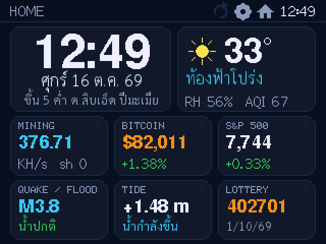
ติดตั้ง NerdMiner ผ่านเบราว์เซอร์
เครื่องขุด Bitcoin บนจอ CYD (ESP32-2432S028 จอเหลือง 2.8") พร้อมจอข้อมูลภาษาไทย ติดตั้งครั้งแรกหรืออัปเดตเป็นรุ่นใหม่ ไม่ต้องลงโปรแกรม ใช้ได้ทั้งคอมพิวเตอร์ (Chrome หรือ Edge) และมือถือ Android (Chrome กับสาย OTG)
เปิดหน้านี้ด้วย Google Chrome หรือ Microsoft Edge บนคอม หรือ Chrome บนมือถือ Android iPhone และ iPad ใช้ไม่ได้ (Apple ไม่เปิดให้เว็บใช้พอร์ต USB)
1. เสียบบอร์ด
- คอม: เสียบด้วยสาย USB ที่ส่งข้อมูลได้ และปิดโปรแกรมอื่นที่อาจใช้พอร์ต เช่น Arduino IDE
- มือถือ: ใช้สาย USB-C ↔ USB-C หรือหัวแปลง OTG จอบอร์ดควรติด (OPPO, realme, vivo บางรุ่นต้องเปิด “การเชื่อมต่อ OTG” ในตั้งค่าก่อน)
2. ติดตั้ง
ไม่ต้องเลือกรุ่นจอ: ตอนเปิดเครื่อง บอร์ดอ่านรหัสชิปจอเอง (HW-458 ชิป ILI9341 หรือ TPM408 ชิป ST7789) แล้วตั้งสีให้ถูก
กดปุ่มแล้วเลือกบอร์ด (ชื่อมักเป็น “USB Serial”, “CH340” หรือ COM) แล้วกดเชื่อมต่อ
ตั้งค่าขั้นสูง / บันทึกการทำงาน
วิธีเชื่อมต่อ
ความเร็ว
หลังติดตั้ง: เปิดเครื่องครั้งแรก
- โลโก้ร้านขึ้นแวบหนึ่ง แล้วขึ้นหน้า Touch calibration (ครั้งแรกครั้งเดียว) แตะกลางเครื่องหมาย + ที่ขึ้นทีละมุมให้ครบ 4 มุม ใช้ปลายเล็บจะแม่นกว่า อยากทำใหม่ภายหลัง: กดนิ้วค้างบนจอตอนโลโก้ขึ้น
- หน้า Choose your Wi-Fi: แตะชื่อ WiFi บ้าน (2.4 GHz) พิมพ์รหัสบนจอ แล้วกด Join
- ไม่สะดวกพิมพ์บนจอ: กด Use phone setup แล้วสแกน QR บนจอด้วยมือถือ หน้าตั้งค่าจะเด้งขึ้นมาให้เลือก WiFi บ้านและใส่ที่อยู่ BTC
- ต่อได้แล้ว จอบอกที่อยู่หน้าตั้งค่า http://<IP>/ พร้อม QR เปิดด้วยมือถือแล้วใส่ที่อยู่ BTC เครื่องถึงจะเริ่มขุด (ระหว่างนี้หน้าขุดมีป้ายเหลืองเตือน)
- ครั้งแรกเครื่องจะขึ้น “เครื่องนี้ยังไม่ได้ปลดล็อก” พร้อมรหัสเครื่อง ส่งรหัสเครื่องให้ผู้ขาย แล้ววางรหัสปลดล็อกในหน้าตั้งค่า (ปลดครั้งเดียว อัปเดตภายหลังไม่ต้องปลดใหม่)
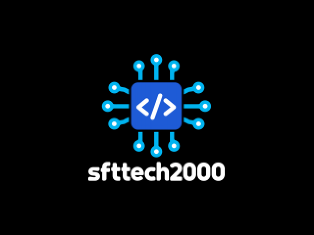
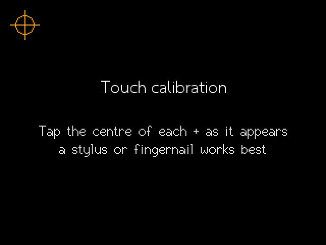
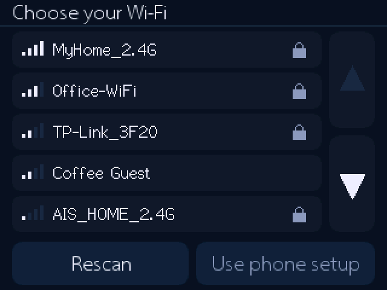
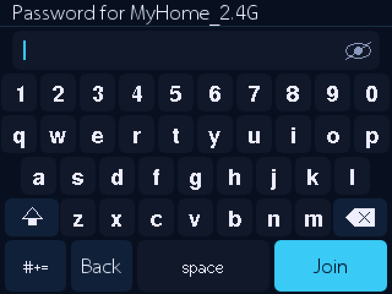
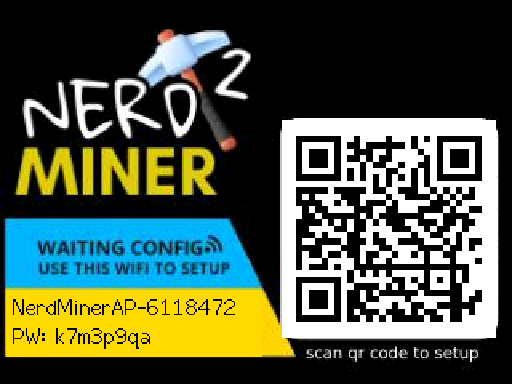
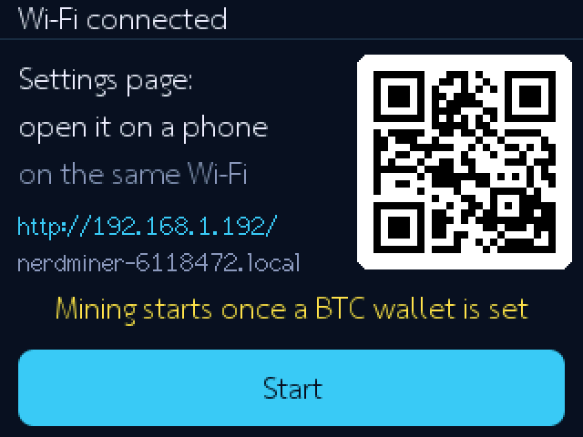
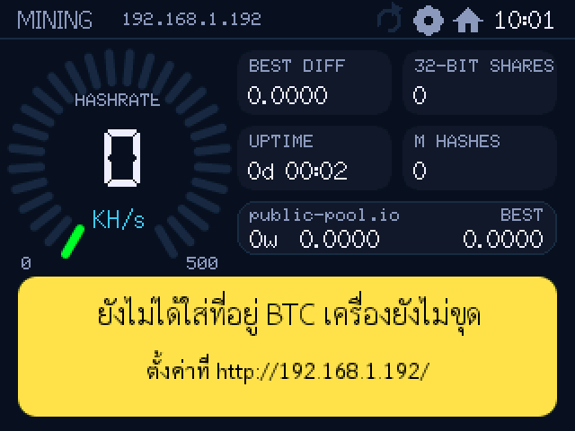
สีจอเพี้ยนเหมือนฟิล์มเนกาทีฟ: ช่อง “กลับสีจอ” ในหน้าตั้งค่า (ปกติบอร์ดตั้งให้เอง)
ในเครื่องมีอะไร
- ขุด Bitcoin แบบ Solo ตลอด 24 ชม. ลุ้นบล็อกเอง
- ราคา Bitcoin ทอง คริปโต หุ้นเมกา และดัชนีโลก อัปเดตเอง
- พยากรณ์อากาศ คุณภาพอากาศ PM2.5 น้ำท่วม แผ่นดินไหว น้ำขึ้นลง ช่วงเวลาตกปลา
- ผลหวยพร้อมตรวจเลข ปฏิทินไทย วันพระ วันหยุด · จอสัมผัส ปัดเปลี่ยนหน้า
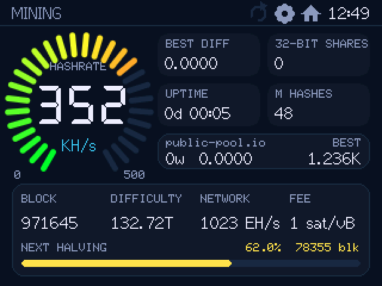
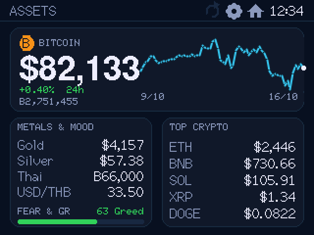
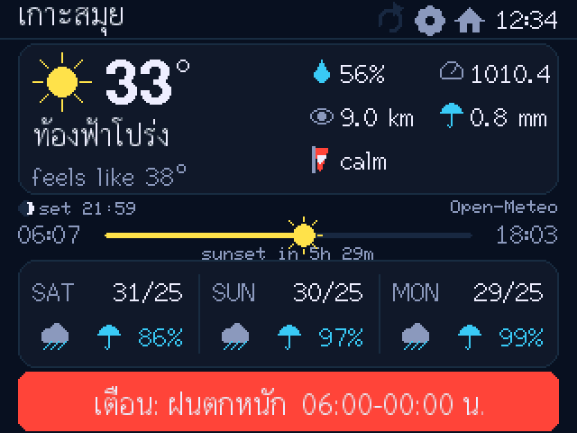
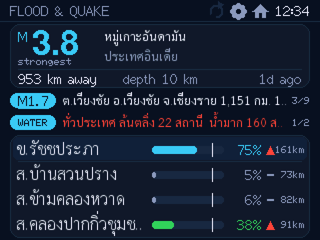
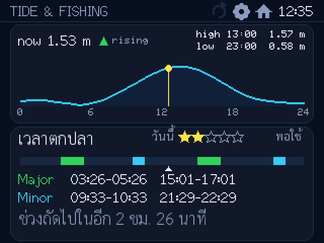
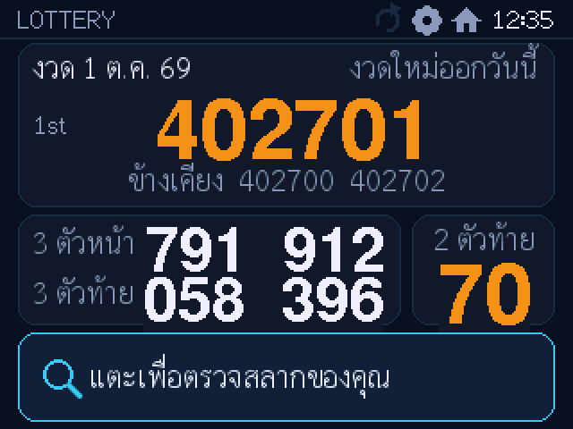
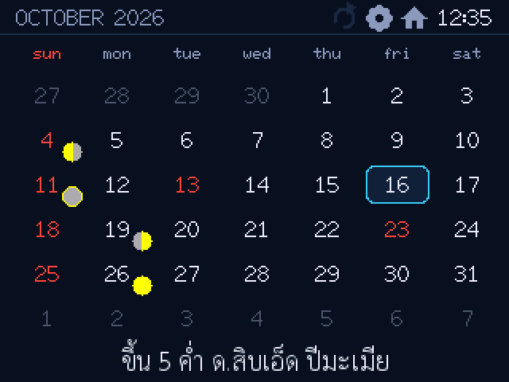
คู่มือ
หน้านี้นับแค่จำนวนครั้งที่ติดตั้งสำเร็จ (+1) ไม่เก็บข้อมูลใดๆ ของคุณ · ใช้ esptool-js (Apache-2.0) ของ Espressif ดู LICENSE · ไลเซนส์ซอฟต์แวร์ในเฟิร์มแวร์ดูได้ที่ http://<IP ของเครื่อง>/licenses